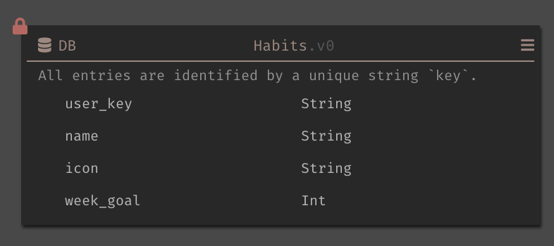
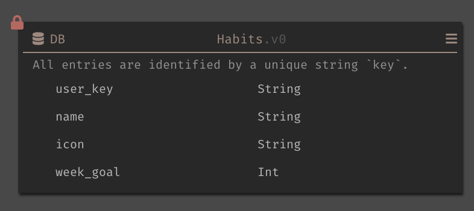

Problem: users were having trouble finding stuff and wasting a lot of time panning, dragging, jumping around their project's canvas.
Ex: DBs and Workers
Handlers & user functions
Understanding the problem
Paul's vision for dark, city analogy... bring data into development.
Bring ops into code (you can see how popular some paths are)
Felt files are arbituary way of splitting code. (and he is right, think depdency cycles)
But at the time of this project, most of our users don't have live traffic yet.
The reason they don't have it is because they are unable to complete their project because they found using Dark so fustrating.
 Unable to understand what their code is doing and how each code chunk is interacting with other code chunks. Barely able to understand the ctrl of their API's architecture. Everything is just in dis-organized floating (sometimes overlapping boxes).
Ctrl flow as streets analogy (show picture of arch)
Unable to understand what their code is doing and how each code chunk is interacting with other code chunks. Barely able to understand the ctrl of their API's architecture. Everything is just in dis-organized floating (sometimes overlapping boxes).
Ctrl flow as streets analogy (show picture of arch)

 A single car's path is a trace
A single car's path is a trace

 And cummulative flow (how we want to ultimately represent arch relations) is like goggle's map traffic layer.
And cummulative flow (how we want to ultimately represent arch relations) is like goggle's map traffic layer.

 First we must pave the streets

First we must pave the streets

For this case we'll be using a simple habits tracker application.
You set a weekly goal for how many times you want to do the activity (ie: run 3 times a week). When you update with a habit complete, it checks to see if you've reached your goal. If you have, you'll get a text with a cute meme, else you'll just get an motivational quote to keep going.
City planning! (Proccess)
- What are the path a trace can take?
- How do we show the navigation of the paths, enable backtracking, and forward going?
- What do information do we show?
Architecture diagram
Go down a single path. How can we map out the course your data will take trough the codebase?

 What is it that is missing? Send meme or quote!
What to show? (Street signs... "Traffic light in 400 km")
A well planned city are designed with the behavior of it's residents in mind.
Let's look at our users.
- Drag dbs around to check schema
- Drag worker's around to see expected object
- Keep going to Fns to see what it does to your data (and also params at that time was not showing in the docstrings)
Proposed Solution!
Interactive example. HTTP -> Worker -> Fn
Patch up constraint. Just use backwards and foward arrows.
MVP: Scope cuts
- Don't show the worker's event expected shape (because it involves complex programming)
- Don't expand functions or other code, and just link to it.
Testing!
Over users loved it. We learned references also provide them a useful way to depreciate (DBs, functions, etc.)
But they didn't like:
- functions going to another place entirely, and not being able to see code side by side.
- The arrows are a little too subtle.
Since the side by side is a result of scope cut. we do plan to have it eventually, let's focus on our poor solution to LVs.
1. Easiest (color the arrows differently)
2. Fade away incoming referneces if editing (place them as top bread crumbs)
3. Move live values to above the cursor
Retrospective
- considered constraints first
- should have fought harder for viewing functions side by side
- Have a plan to figure out when we will bring the learnings and follow up changes instead of leaving them hanging as just vaporware.
What is it that is missing? Send meme or quote!
What to show? (Street signs... "Traffic light in 400 km")
A well planned city are designed with the behavior of it's residents in mind.
Let's look at our users.
- Drag dbs around to check schema
- Drag worker's around to see expected object
- Keep going to Fns to see what it does to your data (and also params at that time was not showing in the docstrings)
Proposed Solution!
Interactive example. HTTP -> Worker -> Fn
Patch up constraint. Just use backwards and foward arrows.
MVP: Scope cuts
- Don't show the worker's event expected shape (because it involves complex programming)
- Don't expand functions or other code, and just link to it.
Testing!
Over users loved it. We learned references also provide them a useful way to depreciate (DBs, functions, etc.)
But they didn't like:
- functions going to another place entirely, and not being able to see code side by side.
- The arrows are a little too subtle.
Since the side by side is a result of scope cut. we do plan to have it eventually, let's focus on our poor solution to LVs.
1. Easiest (color the arrows differently)
2. Fade away incoming referneces if editing (place them as top bread crumbs)
3. Move live values to above the cursor
Retrospective
- considered constraints first
- should have fought harder for viewing functions side by side
- Have a plan to figure out when we will bring the learnings and follow up changes instead of leaving them hanging as just vaporware.